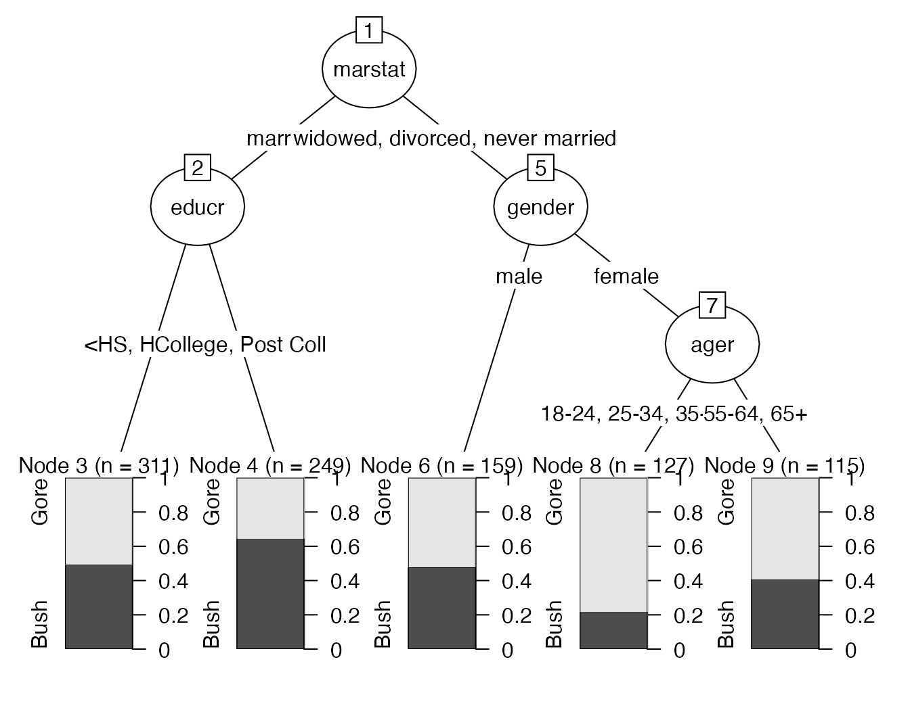

Using chaid_table
Chuck Powell
2020-07-30
Source:vignettes/Using-chaid_table.Rmd
Using-chaid_table.RmdChi-square automatic interaction detection (CHAID) is a decision tree technique, based on adjusted significance testing (Bonferroni testing). The technique was developed in South Africa and was published in 1980 by Gordon V. Kass, who had completed a PhD thesis on this topic. Wikipedia
I’ve written a few blog posts about using this venerable technique. The default output using print() and plot() is sparse, elegant and useful as is, and can be adjusted in many ways that I have documented here.
The code chunk below is taken straight from the example in the help page for CHAID::chaid
The dataset is based on data from a post-election survey on persons who voted for either Bush or Gore in the 2000 U.S. election. The specific variables are related to the publication of Magidson and Vermunt (2005).
Further information (and datasets) about the 2000 U.S. election and other National Election Studies is available on the American National Election Studies Web site (https://www.electionstudies.org/).
library(CGPfunctions) # library(CHAID) library(dplyr) library(knitr) ### fit tree to subsample see ?chaid ## set.seed(290875) ## USvoteS <- USvote[sample(1:nrow(USvote), 1000),] ## ctrl <- chaid_control(minsplit = 200, minprob = 0.1) ## chaidUS <- chaid(vote3 ~ ., data = USvoteS, control = ctrl) print(chaidUS) #> #> Model formula: #> vote3 ~ gender + ager + empstat + educr + marstat #> #> Fitted party: #> [1] root #> | [2] marstat in married #> | | [3] educr <HS, HS, >HS: Gore (n = 311, err = 49.5%) #> | | [4] educr in College, Post Coll: Bush (n = 249, err = 35.3%) #> | [5] marstat in widowed, divorced, never married #> | | [6] gender in male: Gore (n = 159, err = 47.8%) #> | | [7] gender in female #> | | | [8] ager in 18-24, 25-34, 35-44, 45-54: Gore (n = 127, err = 22.0%) #> | | | [9] ager in 55-64, 65+: Gore (n = 115, err = 40.9%) #> #> Number of inner nodes: 4 #> Number of terminal nodes: 5 plot(chaidUS)

Getting more detailed
But what happens if you want to investigate your results more closely? I actually had at least one reader of my blog posts point out that some other statistical packages produce more detailed information in a tabular format.
Some additional things you may want to know that are actually contained in chaidUS but aren’t especially easy to see from the default plot and print and aren’t necessarily easy to ferret out of the chaidUS object:
It’s clear from our call that we fed
chaid1,000 random rows of the datasetUSvote. It must be safe to assume that’s how many valid cases there were right? The documentation is mute on how it handles missing cases.There’s information about counts and frequencies in the terminal nodes (3, 4, 6, 8, 9) and we could manually calculate the answers to other questions like how many people voted for Bush in node #9 (115 * 40.9% = 47)? How many total voters are in node #2 (311 + 249 = 560)? But getting more information gets increasingly tedious. At node #2 what was the breakdown of votes for Bush -v- Gore (hint 245 -v- 315 respectively).
It would also be nice to have easy access to the results of the \(\chi^2\) tests that are the inherent workhorse of CHAID. We know that
marstatwas selected as the first split by virtue of having the smallestp valueafter a Bonferroni adjustment, but what were the results?
chaid_table attempts to provide much more granular information in a tibble and also make it possible for you to derive even more nuanced questions through piping operations. The simplest call is just to feed it the name of the object after it has been processed by CHAID. That object will be of class “constparty” “party”.
# simplest use --- chaidUS is included in the package class(chaidUS) #> [1] "constparty" "party" chaid_table(chaidUS) #> # A tibble: 9 x 15 #> nodeID parent NodeN Gore Bush ruletext split.variable chisq df adjustedp #> <int> <int> <dbl> <int> <int> <chr> <chr> <dbl> <int> <dbl> #> 1 1 NA 961 495 466 <NA> marstat 32.3 1 9.03e-8 #> 2 2 1 560 245 315 marstat… educr 12.9 1 1.33e-3 #> 3 3 2 311 157 154 marstat… <NA> NA NA NA #> 4 4 2 249 88 161 marstat… <NA> NA NA NA #> 5 5 1 401 250 151 marstat… gender 11.5 1 6.79e-4 #> 6 6 5 159 83 76 marstat… <NA> NA NA NA #> 7 7 5 242 167 75 marstat… ager 10.0 1 7.84e-3 #> 8 8 7 127 99 28 marstat… <NA> NA NA NA #> 9 9 7 115 68 47 marstat… <NA> NA NA NA #> # … with 5 more variables: rawpvalue <dbl>, splitrule <chr>, split1 <chr>, #> # split2 <chr>, split3 <chr> mychaidtable <- chaid_table(chaidUS)
I debated the wisdom of providing tables as output in the manner I found most useful and aesthetically pleasing but in the end decided to simply provide the tibble and let the user decide what and how to format.
Example uses
Some easy examples using kable and dplyr.
| nodeID | parent | NodeN | Gore | Bush | ruletext |
|---|---|---|---|---|---|
| 1 | NA | 961 | 495 | 466 | NA |
| 2 | 1 | 560 | 245 | 315 | marstat is ‘married’ |
| 3 | 2 | 311 | 157 | 154 | marstat is ‘married’ & educr is ‘<HS’, ‘HS’, ‘>HS’ |
| 4 | 2 | 249 | 88 | 161 | marstat is ‘married’ & educr is ‘College’, ‘Post Coll’ |
| 5 | 1 | 401 | 250 | 151 | marstat is ‘widowed’, ‘divorced’, ‘never married’ |
| 6 | 5 | 159 | 83 | 76 | marstat is ‘widowed’, ‘divorced’, ‘never married’ & gender is ‘male’ |
| 7 | 5 | 242 | 167 | 75 | marstat is ‘widowed’, ‘divorced’, ‘never married’ & gender is ‘female’ |
| 8 | 7 | 127 | 99 | 28 | marstat is ‘widowed’, ‘divorced’, ‘never married’ & gender is ‘female’ & ager is ‘18-24’, ‘25-34’, ‘35-44’, ‘45-54’ |
| 9 | 7 | 115 | 68 | 47 | marstat is ‘widowed’, ‘divorced’, ‘never married’ & gender is ‘female’ & ager is ‘55-64’, ‘65+’ |
# Just node #2 show percentage mychaidtable %>% select(nodeID:ruletext) %>% filter(nodeID == 2) %>% mutate(pctBush = Bush/NodeN * 100) %>% kable(digits = 1)
| nodeID | parent | NodeN | Gore | Bush | ruletext | pctBush |
|---|---|---|---|---|---|---|
| 2 | 1 | 560 | 245 | 315 | marstat is ‘married’ | 56.2 |
# Just the children of node #5 mychaidtable %>% select(nodeID:ruletext) %>% filter(parent == 5) %>% kable()
| nodeID | parent | NodeN | Gore | Bush | ruletext |
|---|---|---|---|---|---|
| 6 | 5 | 159 | 83 | 76 | marstat is ‘widowed’, ‘divorced’, ‘never married’ & gender is ‘male’ |
| 7 | 5 | 242 | 167 | 75 | marstat is ‘widowed’, ‘divorced’, ‘never married’ & gender is ‘female’ |
# stats for all splits including raw (unadjusted) p value mychaidtable %>% select(nodeID, NodeN, split.variable:rawpvalue) %>% filter(!is.na(split.variable)) %>% kable()
| nodeID | NodeN | split.variable | chisq | df | adjustedp | rawpvalue |
|---|---|---|---|---|---|---|
| 1 | 961 | marstat | 32.345722 | 1 | 0.0000001 | 0.0000000 |
| 2 | 560 | educr | 12.881824 | 1 | 0.0013272 | 0.0003318 |
| 5 | 401 | gender | 11.545710 | 1 | 0.0006791 | 0.0006791 |
| 7 | 242 | ager | 9.997365 | 1 | 0.0078382 | 0.0015676 |
Hopefully those are enough examples to get your creative juices going.
Leaving Feedback
If you like CGPfunctions, please consider Filing a GitHub issue by leaving feedback here, or by contacting me at ibecav at gmail.com by email.
I hope you’ve found this useful. I am always open to comments, corrections and suggestions.
Chuck
License

This work is licensed under a Creative Commons Attribution-ShareAlike 4.0 International License.